Distribución de página
La distribución de página (page layout) es el arte de manipular, la atención del usuario en una página para transmitir significado, secuencia, y puntos de atención.
Jerarquía visual
El concepto de jerarquía visual forma parte de todos los tipos de diseño gráfico. En pocas palabras: el contenido más importante debe sobresalir más, y el contenido menos importante debe sobresalir menos. Un título debe lucir como un título y el contenido secundario debe lucir como lo que es.
Marco Visual
El uso de un marco visual (visual framework) consiste en diseñar cada página de forma que utilice la misma distribución básica, colores, y elementos de estilo; pero dando al diseño la suficiente flexibilidad para manejar diferente contenido para cada página.
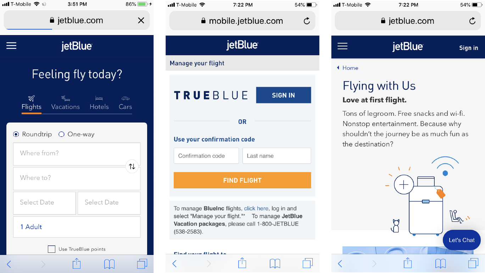
Un marco visual se enfoca en la jerarquía visual de toda la página, pantalla, o ventana; independiente del tipo de contenido que presente en dicha página. Un marco visual afecta todas las páginas y ventanas en una interfaz. Un marco visual da la sensación de cohesión a todas las páginas que componen el sitio o aplicación. Esto facilita al usuario el cambio de una página a otra pues no requiere reconocer la nueva página.
Aún cuando cada página debería contar con un diseño similar, la página principal es diferente y puede contar con un diseño especial pero compartiendo algunos elementos del marco visual.
Algunos elementos que pueden ser similares incluyen:
- Colores: fondos, color de texto.
- Fuentes de letra: títulos, subtítulos, texto ordinario.
- Estilo de escritura y gramática: títulos, nombres, contenido, descripciones cortas.
Otros elementos que se pueden compartir son:
- Ayudas de ubicación: logos, migas de pan
- Navegación global
- Espaciamiento y alineamiento
Escenario central
Se debe poner la parte más importante de la IU en la sub-sección más grande de la página o ventana. Las herramientas y contenido secundarios se colocan alrededor en pequeños paneles. El trabajo principal de la página es mostrar una unidad simple de información coherente al usuario, permitirle editar un documento, o permitirle a él ejecutar una cierta tarea. Otro contenido y funciones son secundarias a esta. Muchos tipos de interfaces pueden usar esta técnica, p.ej. tablas y hojas de cálculo, formularios, y editores gráficos.
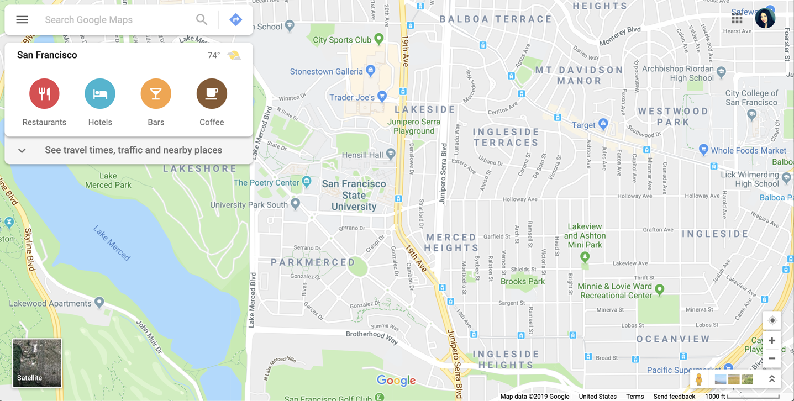
Implementación
Se deben guiar los ojos del usuario inmediatamente al inicio de la información más importante. Los siguientes factores deben ser considerados al diseñar un escenario central:
Tamaño
El escenario central debe ser al menos el doble de cualquier otro elemento en la pantalla, tanto en ancho como en alto. El usuario posteriormente podría cambiar su tamaño, pero así es como debería ser cuando se inicia la aplicación.
Color
Se debe usar un color que contraste con la información en los márgenes. En aplicaciones de escritorio y web se usa blanco contra gris, especialmente para tablas y árboles.
Encabezados
Encabezados grandes son puntos focales y pueden llevar los ojos del usuario a la cabecera del escenario central.
Contexto
Se debe tomar en cuenta lo que el usuario espera ver cuando se abra la página: un gráfico, un texto, una página, un sistema de archivos. Dicho contenido se debe poner en el escenario central y hacerlo reconocible.
La posición del escenario central realmente no es importante, pero se debe tomar en cuenta algunas convenciones para posicionar otros elementos como: barras de herramientas en la parte de arriba y barras de navegación local a la derecha de la página.
Agrupamiento de contenido
Cuando se agrupan cosas juntas se asume que ellas están relacionadas. Al contrario, si se ponen dos cosas muy distantes se asume que no existe una fuerte relación entre sí. El agrupamiento y alineamiento ayuda con el flujo visual, guiando los ojos de usuario desde un grupo a otro.
El sistema visual humano anhela orden. Estamos hechos para ver grandes formas conformadas de otras más pequeñas, como palabras compuestas de letras o tablas compuestas de celdas. Se puede sacar provecho de esta necesidad de orden para agrupar juntas las cosas que están relacionadas, y separar esos grupos con suficiente espacio para que no se confundan.
Es mejor desplegar menos información con más claridad que abarrotar una página demasiado. El alineamiento es otra forma de asociar cosas entre sí. También ayuda hacer los elementos del mismo ancho y altura.
Rejilla de iguales
Se debe ordenar los elementos de contenido en una rejilla o matriz. Cada elemento debe seguir una plantilla común, y el "peso" de cada elemento visual debe ser similar. Se puede realizar también un enlace a la cada página relacionada si es necesaria.
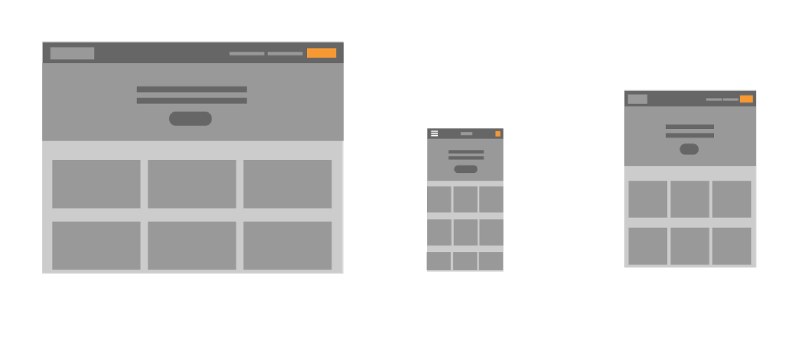
La página contiene muchos elementos de contenido que tiene estilos e importancia simulara, tal como artículos de noticias, entradas de blogs, o áreas de categorías.
Una rejilla que le da a cada elemento igual artículo anuncia que tienen la misma importancia. La plantilla común para los elementos dentro de la rejilla indica al usuario que los elementos son similares entre sí. En conjunto, estas técnicas establecen una jerarquía visual de gran alcance que debe coincidir con la semántica de su contenido.
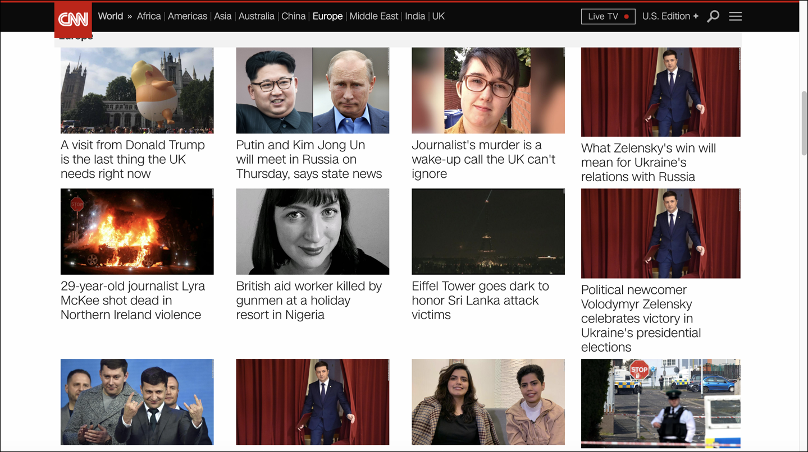
Se deben desplegar los elementos con algo más que bloques de texto: titulares de colores diferentes, ser creativos con espacios en blanco, y el uso de imágenes, si se puede hacer de manera uniforme en todos los artículos. Se debe experimentar diversas formas para adaptarse a toda la información correcta en un espacio relativamente pequeño de estatura, ancho, o cuadrados y aplicar esa plantilla para los elementos que se necesitan mostrar.
Se puede optar por resaltar los elementos de la rejilla, de forma estática (haciendo hincapié en un tema sobre otros) o dinámicamente, cuando un usuario se posiciona sobre los elementos de la cuadrícula. Se pueden utilizar colores y otros cambios de estilo, pero no se debe cambiar las posiciones, tamaños u otros elementos estructurales de la rejilla de los elementos.
Agrupamiento de contenido
Existen diferentes técnicas que permiten el agrupamiento de contenido en una página o ventana. Son útiles cuando se tiene más contenido de que se puede colocar cómodamente en la página al mismo tiempo. Algunos factores que influencian la elección de una u otra técnica son: deben estar todas las diferentes secciones visibles al mismo tiempo, o pueden ser consideradas de forma autónoma ? ; el usuario puede manipular estas secciones o deben estar siempre presentes ?
Secciones con títulos
Este método permite crear secciones separadas de contenido dando a cada una un título visualmente fuerte, luego se distribuyen todas en la misma página. Las secciones con títulos hacen que sea fácil explorar y entender una página aún cuando presente una gran cantidad de contenido. El contenido se puede agrupar en secciones basadas en temas o tareas, de forma que tenga sentido para el usuario.
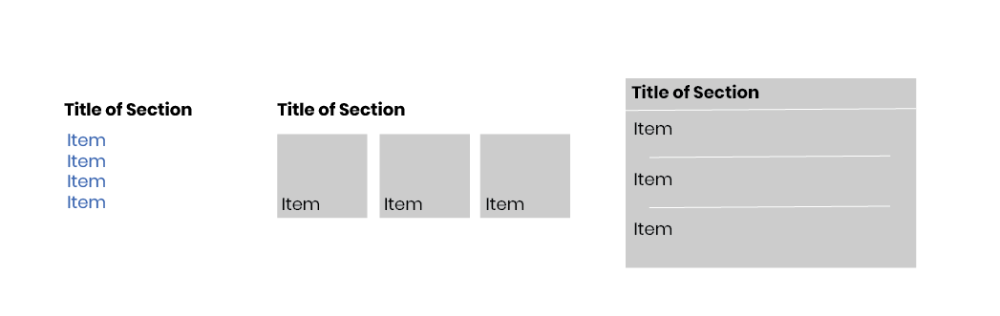
Cuando un usuario ve una página dividida en secciones, él guía su mirada entre la página de forma más confortable.
Algunos factores que pueden ser utilizados son:
- Títulos: Usar fuentes de letra que sobresalgan del resto del contenido, negrilla, ancha, grande, colores fuertes, etc.
- Contraste: El título se puede contrastar contra una barra de fondo.
- Usar espacios en blanco para separar las secciones.
- Poner las secciones en diferentes colores de fondo.
- El dibujo de cajas es muy popular en IU de aplicaciones de escritorio. Sin embargo, se debe tener cuidado en no hacerlas muy grandes, demasiado cercanas, o muy anidadas.
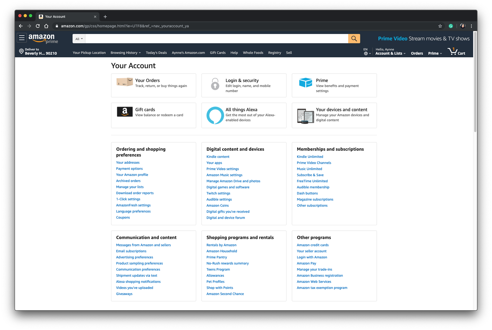
Módulo de pestañas
Consiste en poner contenido en paneles o "tarjetas" separadas, y apilarlas encima de forma que solo una pueda ser visible en un momento. Se deben usar "pestañas" u otro mecanismo para que el usuario las acceda.

Cuando existe demasiado contenido en una página el usuario se distrae. El contenido se podría ordenar en secciones con títulos pero podría ser demasiado para acomodarlo en una sola página. Si el usuario puede ver el contenido en partes, no todo al mismo tiempo, el uso de pilas de tarjetas puede ser útil.
Al diseñar las tarjetas se debe tener especial cuidado en cómo se distribuye el contenido en las diferentes tarjetas. Si el contenido está mal asignado provocará que el usuario necesite moverse constantemente de una a otra tarjeta.

Se pueden usar los siguientes métodos:
Pestañas horizontales
Las pestañas horizontales son muy adecuadas, pero generalmente no se pueden acomodar más de seis pestañas. No es conveniente hacer un plegado de las pestañas, es mejor aplicar un corrimiento sobre las mismas.
Pestañas verticales
Las tarjetas verticales puede utilizar un espacio delgado y alto que normalmente no sería fácil de utilizar en páginas con pestañas.
Una columna a la derecha con una lista de nombres trabaja bien en sitios Web. Inclusive permite organizar las tarjetas en una jerarquía. Lo que no se puede hacer con pestañas.
Algunas aplicaciones utilizan un menú dinámico en la parte de arriba de la página, este toma menos espacio que un columna de enlaces, pero el costo es la claridad.
Acordeón
Esta técnica consiste en poner módulos de contenido en una pila de paneles colineales que se pueden cerrar y abrir de forma independiente el uno del otro.
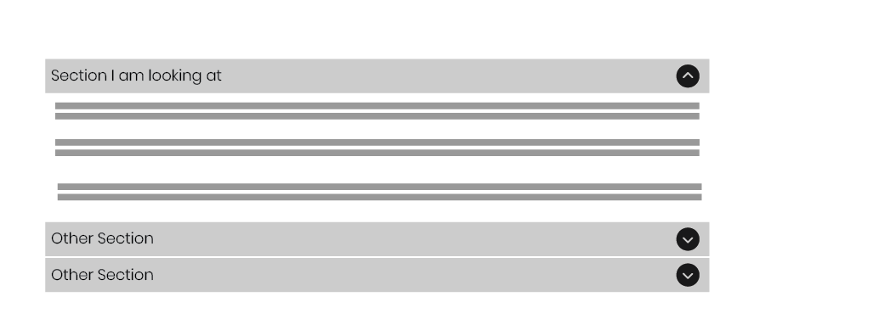
Muchas veces los contenidos de la página se presenta en grupos o módulos (o se pueden clasificar en grupos coherentes). Estos módulos tienen las siguientes características:
- Los usuarios pueden querer ver más de un módulo a la vez.
- Algunos módulos son mucho más altos o más bajos que otros, pero todos son de una anchura similar.
- Los módulos son parte de una paleta de herramientas, un menú de dos niveles, o algún otro sistema coherente de elementos interactivos.
- Los contenidos de los módulos pueden estar relacionado de otra forma o puede ser similar.
- Es posible que desee preservar el orden lineal de los módulos.
También, se debe tomar en cuenta que cuando los módulos están abiertos y son grandes o muchos módulos están abiertos, las etiquetas en la parte inferior del acordeón pueden desplazarse fuera de la pantalla o ventana. Si eso es un problema para los usuarios, se debe considerar el uso de una solución diferente.

Se deben disponer los módulos de forma vertical, en un orden que tenga sentido para la aplicación o sitio en particular. Se debe dar a cada módulo de un título corto y descriptivo, y debe poner ese título en una barra horizontal que el usuario puede hacer clic para cambiar el módulo entre abierto y cerrado. Se podría indicar la "capacidad de apertura" en la barra de título del módulo con un icono de rotación de un triángulo: puesto hacia la derecha cuando está cerrado, y hacia abajo cuando está abierto.
Se puede permitir más de un módulo de estar abierto a la vez. Hay diferentes opiniones sobre esto, algunos diseñadores prefieren sólo un módulo abierto a la vez, y algunas implementaciones permiten solamente uno (o tener un interruptor que los desarrolladores pueden establecer, por lo menos). Pero en práctica, sobre todo en las aplicaciones, es mejor dejar que los usuarios abran varios módulos a la vez. Esto evita la desaparición abrupta e inesperada de un módulo previamente abierto.
Paneles plegables
Este método consiste en poner secciones de contenido en paneles separados, y permitir que el usuario abra y cierre cada uno de ellos en forma separada. Este mecanismo es adecuado cuando existen demasiadas cosas que presentar en la pantalla, pero se desea que todo esté a un click de distancia.

Se debe tomar en cuenta que el contenido debe ser claramente divisible en secciones, tal como sucede en las Secciones con títulos y la Pila de tarjetas. Sin embargo, en este caso el usuario puede ver dos o más secciones al mismo tiempo.
Ciertamente, en cualquier lugar que se utilizan las pila de tarjetas también se puede usar los paneles plegables. Sin embargo, los paneles plegables dan un poco más de flexibilidad. Pueden contener secciones de diferentes tamaños y se pueden abrir múltiples secciones al mismo tiempo.
Aún cuando los paneles con pestañas son bien entendidos, los paneles plegables no son similares y las personas se pueden confundir.
Paneles móviles
Consiste en poner diferentes herramientas o secciones de contenido en paneles separados, y permitir que el usuario los mueva alrededor para formar una distribución personalizada.
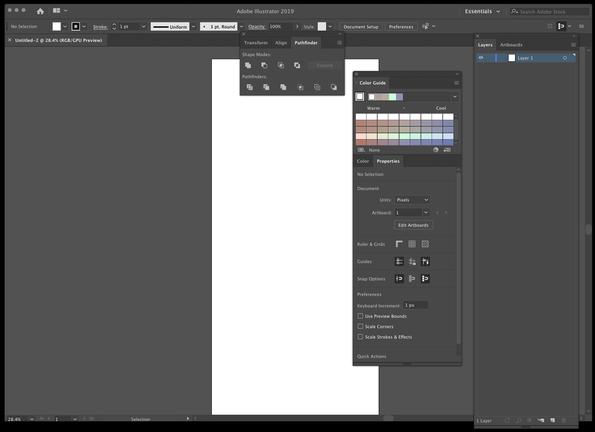
Este mecanismo es útil cuando la interfaz se compone de muchas piezas coherentes que podrían ordenarse de múltiples formas. Esto da, al usuario, un sentido de propiedad del software.
Conforme un usuario trabaja más con un software, él desea ordenar su ambiente de trabajo. Esto puede incluir el acomodar las herramientas que más utiliza en un lugar predominante y aquellas que menos utiliza a posiciones secundarias.
Aquí el usuario utiliza Memoria Espacial para recordar en dónde puso cada elemento. Es conveniente guardar la configuración que realiza cada usuario, de forma que la próxima vez se cargue y ordene la interfaz de la misma forma que se definió.
La implementación de este mecanismo puede ser muy libre, permitiendo que los diferentes componentes se traslapen, o bien, se puede definir una distribución basada en una rejilla en donde se posicionan los elementos.
Si los diferentes paneles reaccionan a movimientos con el mouse, se debe disponer de un área del panel como un "manejador" que permita arrastrarlo. Las barras de título son útiles para esto. También, el panel debe incluir mecanismos para cerrarlo o eliminarlo de la pantalla. También, se debería proveer una opción para volver al ordenamiento "por defecto“.
Flujo visual y alineamiento
Una serie de técnica de disposición de página se relacionan con los conceptos de flujo visual, alineamiento y otros aspectos del diseño gráfico. Estas técnicas tratan con las relaciones espaciales entre elementos pequeños y más estáticos de la página, tales como texto y controles.
Alineamiento Derecha/Izquierda
Cuando se diseña un formulario o tabla de dos columnas, las etiquetas se deben alinear a la derecha y los ítems a la izquierda. Si las etiquetas están cercanas a los ítems (proximidad), al usuario se le facilita asociarlos, al contrario de si se alinean de otra forma.
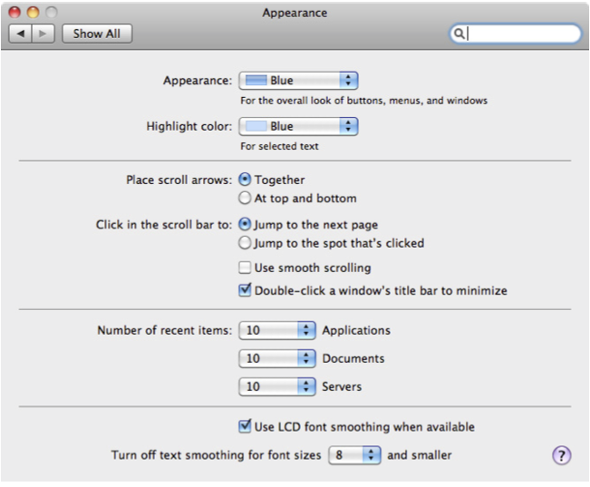
En algunas distribuciones el alineamiento derecha/izquierda podría lucir inadecuado, por ejemplo: las etiquetas pueden ser muy largas, o columnas de iconos pueden estar a la izquierda de las etiquetas, o bien, los títulos de las secciones se alinean a la izquierda.
Los controles también deben alinearse entre sí, de forma que se forme una línea vertical imaginaria (continuidad). De ser posible también los controles se deberían poder alinear a la derecha. Para lograr esto se puede estirar algunos y contraer otros.
La separación entre las etiquetas y los ítems debe ser pequeña. Si una etiqueta es muy larga se puede separar en varias líneas.
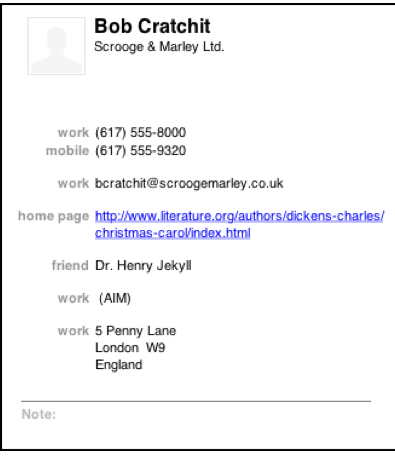
Balance Diagonal
Este mecanismo consiste ordenar los elementos de la página en una forma asimétrica, pero balanceada. Esto se logra poniendo el peso visual en la esquina superior izquierda y la esquina inferior derecha.
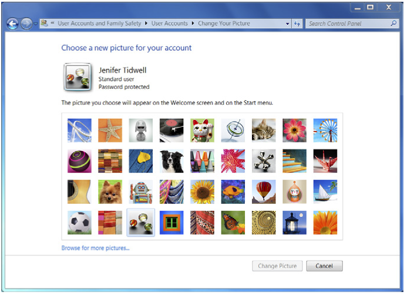
El ejemplo clásico es una caja de diálogo en donde los títulos aparecen en la esquina superior izquierda, y los botones se agrupan en la esquina inferior derecha. La página debe ser lo suficiente pequeña para caber en la pantalla sin corrimiento, sino se pierde el efecto deseado.
Este mecanismo intenta seguir el Flujo Visual de las personas que leen de izquierda a derecha. El mayor peso empieza con los títulos de la pantalla, y finaliza con los botones de acción.
Para mantener el balance visual se debe tener cuidado de distribuir el contenido en la página de forma uniforme sin dejar demasiado espacio en algún lado.
Se debe colocar el título, pestañas o cualquier otro elemento fuerte en la parte superior izquierda de la página, y se deben colocar un botón (o varios botones) en la parte inferior derecha. El contenido de cualquier anchura va en el medio. Si el contenido en sí contribuye al equilibrio de la página, tanto mejor, pero no se debe poner demasiado espacio en blanco de un solo lado.
Aspectos dinámicos
Algunas técnicas intentan dirigir a un usuario a través de una serie de pasos o un conjunto de opciones, ellas indican lo que se puede hacer en cualquier momento en el tiempo, evitando que el usuario se desvíe hacia áreas que lo puedan meter en problemas.
Descubrimiento sensitivo
El Descubrimiento sensitivo consiste en iniciar con un interfaz muy mínima, y guiar al usuario a través de una serie de pasos mostrando más de la interfaz conforme de completan los pasos.

Este mecanismo es útil cuando el usuario debe caminar paso-a-paso a través de una tarea compleja, posiblemente porque es novato o la tarea es nueva o poco frecuente (Wizard). Pero en este caso no se quiere que el usuario pase de una página a otra, sino que se desea mantener la interfaz completa en la misma página.
En este mecanismo, la interfaz parece ser "creada" frente al usuario en forma dinámica, un paso a la vez. Al principio el usuario ve solo los elementos necesarios para empezar, conforme avanza se agregan nuevos elementos en cada paso.
Debido a que la interfaz va apareciendo en pequeños pasos, el usuario se logra formar fácilmente el modelo mental de la secuencia de pasos necesarios para completar la tarea. También, gracias a que todos los elementos anteriores se mantienen en la interfaz, el usuario puede regresar y cambiar algunos de ellos cuando guste.
Se debe empezar mostrando los controles y el texto de sólo el primer paso. Cuando el usuario completa dicho paso, se muestran los controles para el paso siguiente, y así sucesivamente. Dejar los controles de los pasos anteriores visibles le permite al usuario ir hacia atrás si es necesario. Se debe mantener todo en una página o un cuadro de diálogo para que el usuario no sea llevado de repente a un "espacio de la interfaz de usuario" separado.
Habilitación sensitiva
Este mecanismo consiste en iniciar la interfaz con la gran mayoría de elementos deshabilitados, y guiar al usuario a través de una serie de pasos habilitando más de la interfaz conforme cada paso es completado.

Este mecanismo es muy similar al “descubrimiento sensitivo” y se puede usar en las mismas situaciones que este. Sin embargo, la ventaja de la “habilitación sensitiva” es que la interfaz se mantiene estable y no se reconfigura la página a cada paso. También, el usuario se puede dar una imagen de todas las opciones disponibles a diferencia del mecanismo de “descubrimiento sensitivo”. Debido a que muchas opciones están deshabilitadas en un paso en que son irrelevantes, el usuario comete menos errores.
Al inicio la mayoría de las acciones en la interfaz de usuario empiezan deshabilitadas, sólo las acciones correspondientes a la primera etapa del usuario están disponibles. A medida que el usuario toma decisiones y lleva a cabo acciones, más elementos deshabilitados deberían activarse.

Siempre que sea posible, los elementos deshabilitados deberían colocarse en las proximidades de lo que ellos actúan. Esto ayuda a los usuarios a encontrar la operación que permite accionar y entender la relación entre este y los elementos deshabilitados.
Referencia
Todo el material anterior es un resumen basado en el libro de:
- Jenifer Tidwell, Charles Brewer, and Aynne Valencia. "Designing Interfaces: Patterns for Effective Interaction Design", O'Reilly, 2020 (Cap.4)